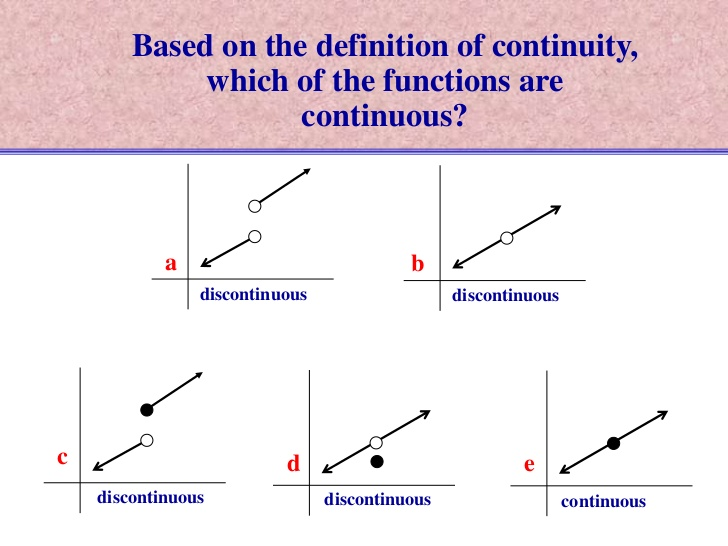

Continuity

A function in continuous if there is no break between any points of the function.

This is a discontinuous function, because when you plug in 3 consecutive x values in the equation, there is no correlation between the outputs.
A function in continuous if there is no break between any points of the function.
|
f(1)=(12-4)/(2-|1|) |
f(2)=-4 | f(3)=|3-2|-4 |
| (1-4)/(2-1) | |1|-4 | |
| -3/1 | 1-4 | |
| f(1)=-3 | f(3)=-3 |